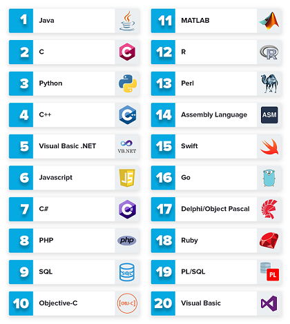

programming languages main page
links:
Modern computers are incredibly fast, and getting faster all the time. However, computers also have some significant constraints: they only
natively understand a limited set of commands, and must be told exactly what to do.A computer program (also commonly called an application)
is a set of instructions that the computer can perform in order to perform some task. The process of creating a program is called programming.
Programmers typically create programs by producing source code (commonly shortened to code), which is a list of commands typed into one or more
text files.The collection of physical computer parts that make up a computer and execute programs is called the hardware. When a computer
program is loaded into memory and the hardware sequentially executes each instruction, this is called running or executing the program.
